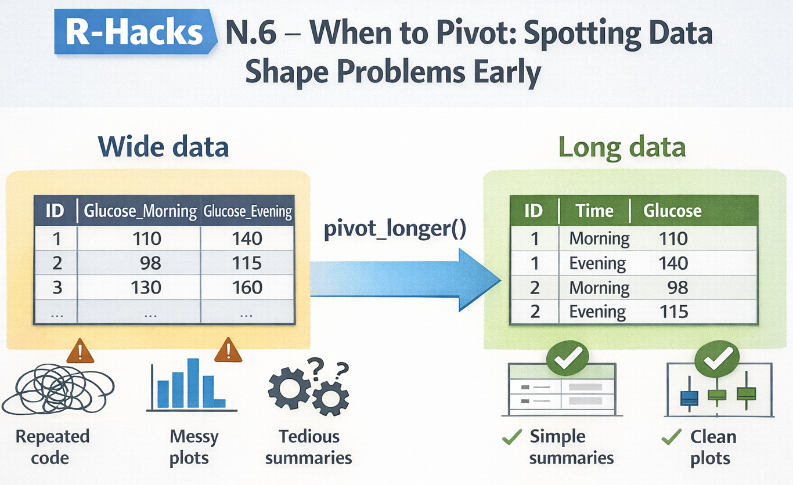

id glucose_morning glucose_evening
1 1 110 140
2 2 98 115
3 3 130 160
4 4 105 125
5 5 120 150When to Pivot: Spotting Data Shape Problems Early
A small structural decision that simplifies everything downstream
data-wrangling
workflows
tidyr
R-Hacks N.6

If your code feels harder than it should be, the problem is often not your logic.
It’s the shape of your data.
This R-Hack focuses on a common but under-diagnosed issue: delaying reshaping, then compensating with complex code. Learning to recognise early signals that data should be pivoted can dramatically simplify summaries, plots, and models.
What “data shape” means (in practice)
Forget theory. In practice, data shape answers one question:
What is an observation?
If an observation is:
- a person at a time point
- a measurement of a variable
- a category–value pair
then your data should reflect that row by row.
A quick rule of thumb:
If you are repeating the same operation across multiple columns, your data likely wants to be long.
Early warning signs you should pivot
If you see any of the following, pause and consider reshaping:
-
mutate()orsummarise()repeated across many columns -
across(starts_with(...))doing heavy lifting -
ggplotcode that manually references multiple variables - column names encoding values (e.g. sales_2022, sales_2023)
- copy–paste patterns that differ only by column name
These are shape problems, not syntax problems.
A minimal example
Let’s simulate a small, tidy-looking dataset that is actually awkward to work with.
At first glance, this looks fine. But now try to:
- compute summaries
- make a single plot
- compare morning vs evening values
Everything becomes more complicated than necessary.
Pivot once, simplify everything
A single pivot_longer() changes the workflow completely.
df_long <- df_wide |>
pivot_longer(
cols = starts_with("glucose"),
names_to = "time",
values_to = "glucose"
)
df_long# A tibble: 10 × 3
id time glucose
<int> <chr> <dbl>
1 1 glucose_morning 110
2 1 glucose_evening 140
3 2 glucose_morning 98
4 2 glucose_evening 115
5 3 glucose_morning 130
6 3 glucose_evening 160
7 4 glucose_morning 105
8 4 glucose_evening 125
9 5 glucose_morning 120
10 5 glucose_evening 150Now each row is a measurement, not a column variant.
See the payoff immediately
Summaries become simpler
Plots become trivial
library(ggplot2)
ggplot(df_long, aes(x = time, y = glucose)) +
geom_boxplot() +
labs(
title = "Glucose levels by time of day",
x = NULL,
y = "Glucose"
) +
theme_minimal()
- No manual aesthetics
- No duplicated code
- No workarounds
When not to pivot
Not everything should be long.
Avoid pivoting when:
- columns represent different concepts (e.g. age vs height)
- you are producing final reporting tables
- identifiers would be duplicated unnecessarily
Pivoting is a tool, not a rule.
Making this a habit
Before adding complexity, ask: - Am I repeating the same logic across columns? - Am I fighting ggplot instead of feeding it clean data? - Are column names doing the job rows should be doing?
If the answer is “yes”, try reshaping early.
In short
- Many messy workflows start with data in the wrong shape
- Shape problems masquerade as logic problems
- One early pivot can remove dozens of lines of code
- Decide structure early, then move on
This is not about writing more code. It’s about writing less.
Industry update (short note)
Posit has opened a private beta of an AI assistant embedded directly in RStudio. If you’re curious to try it, you can join the waiting list here:
👉 https://posit.co/products/enterprise/ai/
Tip
If you want to stay up to date with the latest events and posts from the Rome R Users Group, follow us here: